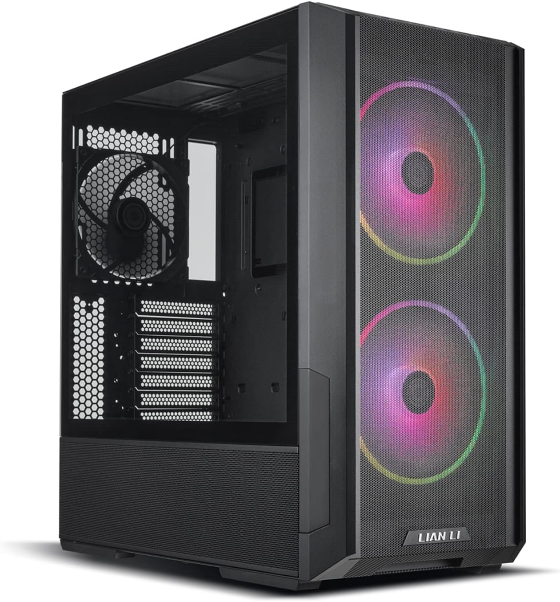
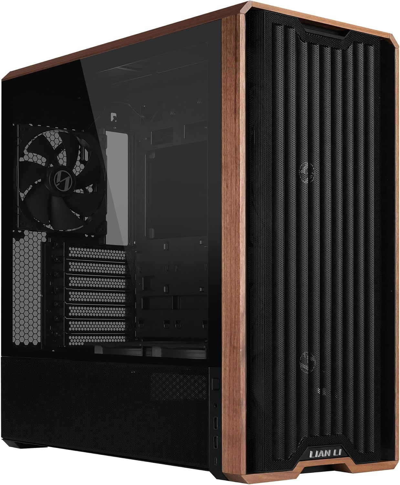
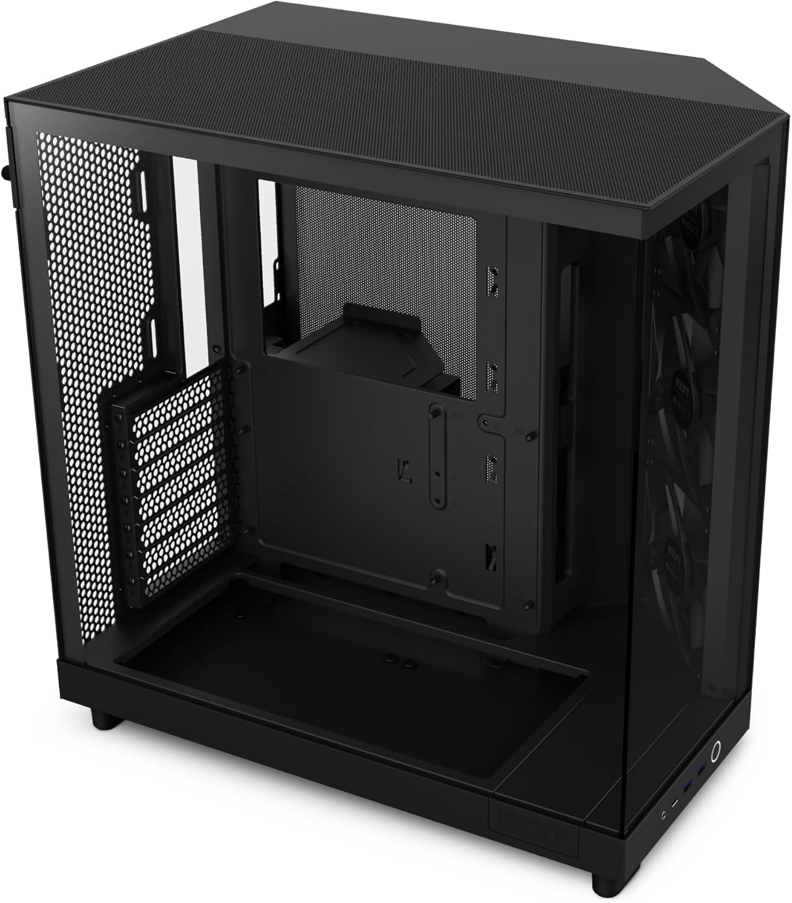
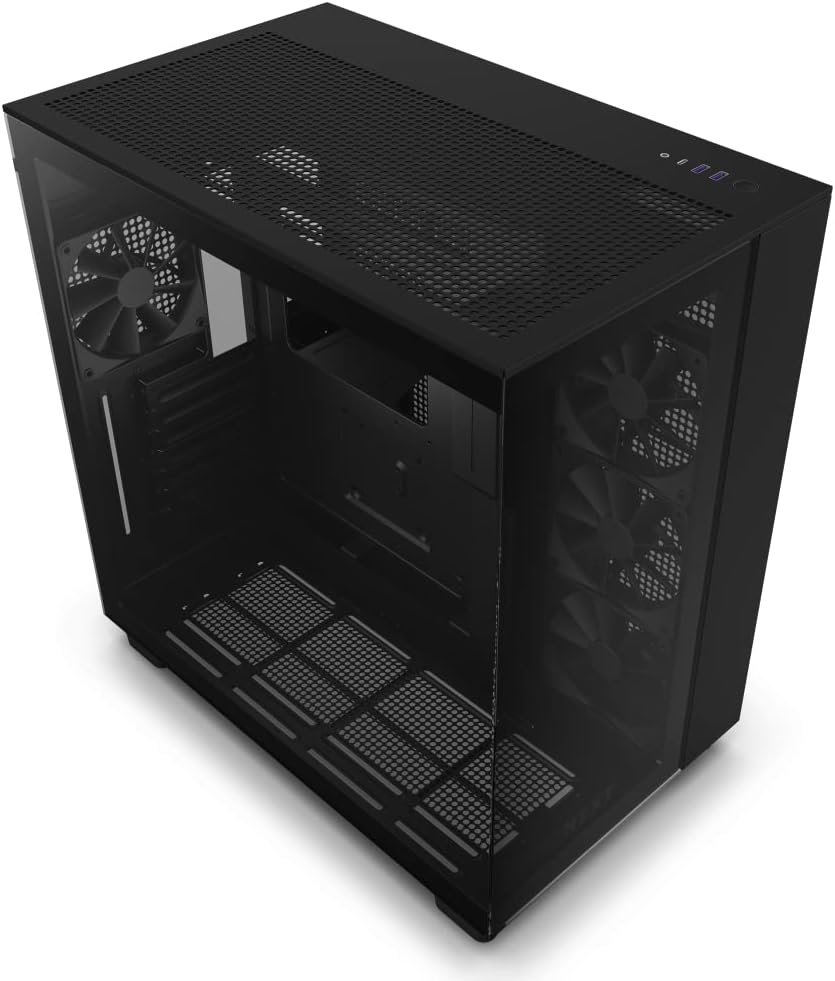
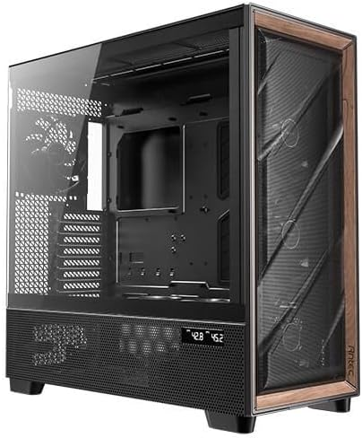
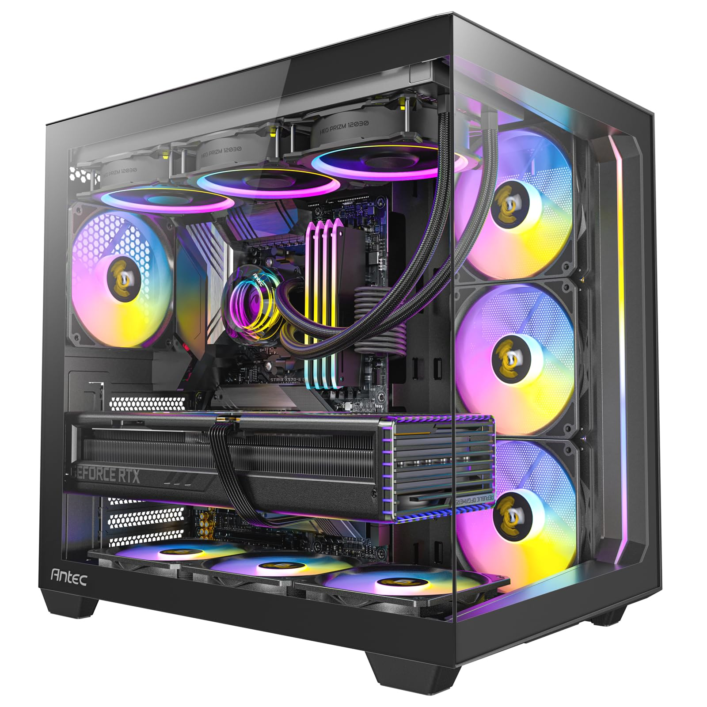

Lian Li Lancool 216
- Excellent flux d'air, très bon rapport qualité/prix
- Facile à monter, compatible watercooling

Lian Li Lancool 217
- Version améliorée du 216, design moderne
- Très bon refroidissement, espace optimisé

NZXT H6 Flow
- Design compact, très bon airflow
- Parfait pour les configs sobres et efficaces

NZXT H9 Flow
- Boîtier spacieux, idéal pour les grosses configs
- Excellente gestion des câbles et du refroidissement

Antec Flux Pro
- Très bon rapport qualité/prix
- Flux d'air optimisé, silencieux

Antec C5
- Design moderne, très bon refroidissement
- Facile à monter, bon espace intérieur
Conseil général
Tous les boîtiers ne sont pas équipés de ventilateurs de qualité ou en quantité suffisante. Pour améliorer le flux d'air et optimiser le refroidissement de votre configuration, envisagez d'ajouter des ventilateurs supplémentaires. Cela est particulièrement important si votre boîtier n'a pas de ventilateurs préinstallés ou si ceux fournis sont de mauvaise qualité.
Privilégiez des ventilateurs silencieux et performants pour un bon équilibre entre refroidissement et confort acoustique. Vérifiez également la compatibilité avec votre boîtier avant d'acheter.
Pour comparer les performances des ventilateurs et des boîtiers, consultez des tests fiables en ligne avant de faire votre choix.